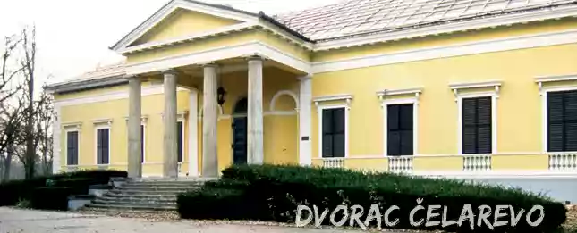

SRBIJA
Kompleks čini nekoliko objekata smeštenih u prostranom parku, organizovanom po principu engleskih vrtova, na vlastelinskom posedu nastalom u drugoj
polovini 18. veka. Manji dvorac sagradio je Marfi Lipot na prelazu iz 18. u 19. vek. i u njemu je živeo plemić Nikola Bezeredi sa svojom porodicom.
Bezerdi se odlučio na gradnju Velikog dvorca, koji je po planovima nepoznatog bečkog arhitekte sagrađen između 1834. i 1837. Iako je sama zgrada
proglašena dvorcem, ona je služila isključivo kao letnjikovac Nikoli Bezerediju koji je posedovao kuće u Beču i Budimpešti.
kao klasičan primer reprezentativne spahijske rezidencije.Klasicističke stilske odlike, dekorativni detalji, bogatstvo dekoracije, raspored prostorija,
obrada i oprema enterijera, upotpunjuju reprezentativnost objekta.

O izgledu unutrašnjosti dvorca posle izgradnje se malo zna, ali se u nekim spisima navodi da je zgrada do prodaje veleposedniku Lazi Dunđerskom 1882.
bila oslikana freskama. Sam park, koji je stalno proširivan, oduvek se isticao svojom lepotom, toliko da se o njemu po celoj Ugarskoj naširoko pričalo.
Od kraja 19. veka pa do Prvog svetskog rata bio je stecište uglednih i značajnih političkih i kulturnih ličnosti toga doba. Između ostalih dvorac su
posećivali Nikola Tesla, Paja Jovanović, Stevan Todorović i Laza Kostić, koji je u čast Lenki Dunđerskoj, koju je upoznao u ovom dvorcu, napisao
najlepšu ljubavnu pesmu „Santa Maria della Salute“, a u dvorcu je jedno vreme boravio i Aleksandar Karađorđević.
Posle Drugog svetskog rata, od 1947. do polovine 1952. godine, zgrada dvorca sa pratećim objektima pripadala je tadašnjem Predsedništvu Vlade FNRJ.
Tada je u tom zdanju povremeno boravio predsednik Josip Broz Tito. Dvorac je spomenik kulture od izuzetnog značaja.